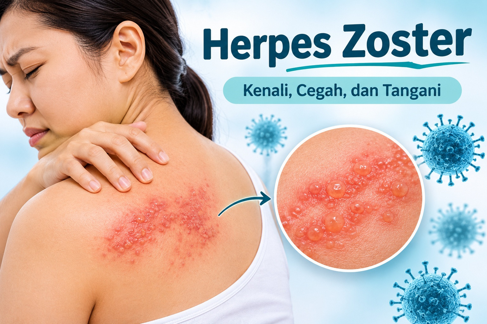

Profil Penyakit Herpes Zoster

Pengertian Herpes Zoster
Herpes Zoster merupakan penyakit yang disebabkan oleh aktifnya kembali virus Varicella-Zoster. Penyakit ini dapat menyebabkan ruam kulit dan rasa nyeri pada bagian tubuh tertentu.
Karakteristik Penyakit
- Muncul ruam pada kulit.
- Menimbulkan rasa nyeri.
- Dapat muncul lepuhan berisi cairan.
- Biasanya terjadi pada satu sisi tubuh.